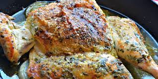

Chimichurri Baked Chicken

Description
Chimichurri is a dish from Argentina that is usually served over grilled chicken or steak. When combined with
chicken, this makes a great dish for every occasion
Ingredients
- ½ cup finely chopped fresh parsley
- 2½ tablespoons olive oil
- 2 tablespoons chopped fresh oregano leaves
- 1 tablespoon red wine vinegar
- 2 cloves garlic, minced
- ¼ teaspoon salt
- ⅛ teaspoon red pepper flakes
- 1 pinch freshly ground black pepper
- 1 (3 pound) whole chicken
- 1 teaspoon olive oil
- 1 large onion, sliced
- ½ cup chicken broth
Steps